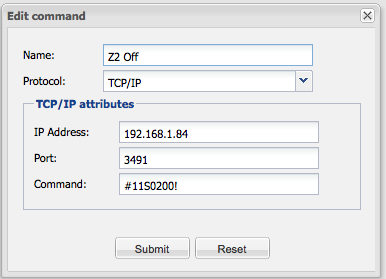

|
This page last changed on Oct 13, 2013 by stuartjbarker.
Hi All,
I'm trying to establish control of our A/V unit (Opus Technology) using OpenRemote. The unit accept RS232 command strings over IP and I have been provided the control strings from our installer (e.g. '#11S0200!'), along with the port number for the unit (3491).
What's the best approach to doing this with OR?
Thanks in advance,
Stuart
|
Do you need to telnet into the box or just send the string? Depending on that you can use the telnet protocol or the tcp protocol.

Posted by mredeker at Oct 15, 2013 07:52
|
|
Hi Marcus - apologies it's taken this long to respond. My understanding from the installer is that it's just TCP/IP in to the port. However, I'm not getting any success.
I've attached the screenshot, is there anything obvious that's wrong with how I'm entering the string in to the config?

Posted by stuartjbarker at Nov 04, 2013 22:00
|
|
The TCP command is adding a <CR> after the command.
Maybe your device needs a <CR><LF> ?
Do you see anything in the logfiles?
Posted by mredeker at Nov 04, 2013 22:28
|
|
Excellent! I've figured it out - it's not telnet, neither is it TCP/IP, it's UDP!
After some messing around in a terminal with telnet to check the controller would respond to the strings I'd been provided as an example, I started playing around to turn on/off the 6 controllers in the house.
I then tried using the telnet command, no luck, then back to TCP/IP, no luck. So, thought I might have a go using UDP... hey presto! OpenRemote controlling the Opus Technology MCU600!
Posted by stuartjbarker at Nov 04, 2013 22:44
|
|
{kind=link}